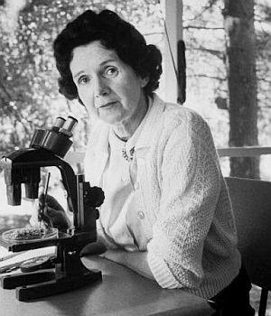
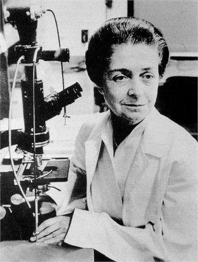

At seven years old, inventor Grace Hopper dismantled her alarm clock to figure out how it worked, but initially couldn’t put it back together. By the time her mother noticed, she had already dismantled and reassembled 7 other clocks. This helped with her interest in computers and figuring out problems. During World War II, she joined the navy led the team that created the first computer compiler language, which led to the popular computer language COBOL and later helped programmers use if/thens instead of 1s and 0s. She became the third programmer to work on the Mark I computer. After the war, she became a research fellow at Harvard where she discovered that the university’s Mark II calculator was malfunctioning. It was a moth stuck in one of the switches controlling the circuit, which she quickly removed and taped into her research notebook. She had literally “debugged” the computer. After that, people began to use the word “bug” to describe a computer glitch.
(1936-)
The working mom who took us to the moon
Apollo 11 launched and landed successfully in 1969, with millions stressfully looking to the sky or their TV sets to watch the astronauts take their first steps, but a key woman was left out of the public celebration. Margaret Hamilton wrote and developed the code for Apollo 11’s on-board guidance for navigation and landing, but since that wasn’t enough contribution for her, she also first coined the term software engineering. As a working mom, she would often bring her 4 year old boy as she programmed. She found that since software engineering was not yet a field, she often had to invent answers and invented as she went along.
(1907-1964)
Conservation and Controversy

Rachel Carson was born into her love of nature and conservation. She expressed her love of nature first as a writer and then moved into the career of a marine biologist. She was hired by the U.S. bureau of Fisheries to write radio scripts during the depression, and later became the editor in chief for all publications of the U.S. Fish and Wildlife Services. She later quit to devote herself to writing, Her books became a biography of the ocean and made Carson famous as a naturalist and science writer for the public and later, after conducting research on the effect of pesticides on the food chain, she changed her focus in order to warn the public about the long-term effects of misusing pesticides. In her famed book Silent Spring, she challenged the practices of agricultural scientists and the government and called for a change in the way humans viewed and interacted with the natural world. Carson was attacked both by the Chemical Industry and by the Government for being an alarmist making a fuss out of nothing, she testified before congress in 1963 to call for new policies to protect human health and the environment. At the time, she was 56 and in the final stages of breast cancer and had already had a radical mastectomy. She was barely strong enough to walk to and from her chair, but showed up because of how passionate she was in her work.
(1909-2012)
A rebel in medicine and cell theory

“Above all, don’t fear difficult moments. The best comes from them.”
Born in Turin, Italy in 1909, Rita’s love for science and medicine was challenged at a young age. Her father believed that a woman’s place was at home as a wife and mother. Despite his wishes, Rita decided to study medicine at the University of Turin. She studied how cells divided and multiplied, to help her improve research for medical problems like dementia, delayed wound healing, and tumor diseases. She graduated in the 1930s, only to have the Italian dictator at the time, Benito Mussolini, institute laws that forbid people of Jewish heritage from working at Universities or in most professions. That didn’t stop her, and she began to research not in University labs, but in a makeshift lab in her bedroom in secret. She used sharpened sewing needles as surgical materials. She continued research throughout World War II, even when bombing forced Rita and her family to flee Turin or live underground. When the war ended, she served as a doctor in a refugee camp before returning to the University of Turin, and her research papers allowed her to come to America and teach at Washington University St. Louis.
(1920-1958)
The genetic makeup of genius, overlooked
Rosalind Franklin was a rebel, and began questioning authority when she was little, asking her parents if they were sure god wasn’t a woman and wanting to take the most challenging math classes offered. In 1962, three men were awarded the Nobel prize for their claimed discovery of DNA. Franklin loved to advocate for herself, even if it meant butting heads with her boss and male colleagues. Maurice Wilkins was one of these colleagues, who, feeling frustrated, decided to take her work (without her permission, of course) and show it to other scientists, Watson and Crick, struggling with incorrect models of DNA, yet Watson and Crick were both famed for this discovery later on. They used her “Photo 51” to publish a paper and win the Nobel Prize while she remained oblivious. She passed away at age 39 from Ovarian cancer, still not knowing that the three of them had stolen her work. Luckily, she has begun to get some recognition today and hopefully into the future.
(1920-1958)
Ground-breaking research and development
Ruby Hirose was born and raised in a Washington suburb, the first second-generation Japanese immigrant to graduate from her high school, and often faced both issues of racial identity and discrimination. She went on to graduate with a pharmacology degree and later a doctorate. Dr. Ruby Hirose was a Japanese-American biochemist and bacteriologist who conducted vaccine research essential to developing the polio vaccine. In 1940, she was one of only 10 women recognized at the American Chemical Society meeting in Ohio. She suffered from hay fever, helping her continue developing different treatments and also improved treatments that used pollen extracts to help with desensitizing allergies. Because of the fact that she was a Japanese American at the time of World War II, her family was sent to internment camps. Since Ruby was living in Cincinnati at the time, she was able to escape the same fate and could continue her research.